Rows: 2,576
Columns: 10
$ race <chr> "US Senate", "US Senate", "US Senate", "US Senate…
$ precinct <chr> "Northfield 1", "Northfield 2", "Northfield 3", "…
$ precinct_num <dbl> 1, 2, 3, 4, 5, 6, 7, 8, 9, 10, 11, 12, 13, 14, 15…
$ registered_voters <dbl> 1856, 979, 1754, 1156, 865, 1160, 1578, 1540, 790…
$ ballots_cast <dbl> 165, 225, 322, 219, 150, 248, 377, 307, 213, 201,…
$ candidate <chr> "Kevin Ryan", "Kevin Ryan", "Kevin Ryan", "Kevin …
$ votes <dbl> 6, 5, 10, 10, 6, 7, 14, 13, 14, 8, 7, 26, 4, 12, …
$ endorsed <lgl> FALSE, FALSE, FALSE, FALSE, FALSE, FALSE, FALSE, …
$ vote_share <dbl> 0.0364, 0.0222, 0.0311, 0.0457, 0.0400, 0.0282, 0…
$ multi_candidate_race <lgl> FALSE, FALSE, FALSE, FALSE, FALSE, FALSE, FALSE, …Northfield Township Post-Primary Review
You can add options to executable code like this
Reading layer `Precinct' from data source
`/Users/andrewduffy/Desktop/NF TWP Results/Precinct.shp' using driver `ESRI Shapefile'
Simple feature collection with 1430 features and 15 fields
Geometry type: MULTIPOLYGON
Dimension: XY, XYZ
Bounding box: xmin: 1003173 ymin: 1749886 xmax: 1205634 ymax: 1998850
z_range: zmin: 0 zmax: 0
Projected CRS: NAD83 / Illinois East (ftUS)Rows: 1,430
Columns: 16
$ OBJECTID <int> 4305, 4306, 4307, 4308, 4309, 4310, 4311, 4312, 4313, 4314,…
$ STATEFP <chr> "17", "17", "17", "17", "17", "17", "17", "17", "17", "17",…
$ COUNTYFP <chr> "031", "031", "031", "031", "031", "031", "031", "031", "03…
$ precinctid <chr> "7000011", "7000001", "7000004", "7000007", "7000009", "700…
$ name <chr> "BARRINGTON 11", "BARRINGTON 1", "BARRINGTON 4", "BARRINGTO…
$ Township_N <chr> "BARRINGTON", "BARRINGTON", "BARRINGTON", "BARRINGTON", "BA…
$ Township_1 <chr> "70", "70", "70", "70", "70", "70", "70", "70", "70", "70",…
$ Precinct_N <chr> "11", "1", "4", "7", "9", "2", "3", "8", "5", "6", "1", "11…
$ GlobalID <chr> "{850A82C8-98BA-4F3E-801C-B1A141218859}", "{EEEBB7A6-404A-4…
$ created_us <chr> "TODDSOBIECK1", "TODDSOBIECK1", "TODDSOBIECK1", "TODDSOBIEC…
$ created_da <date> 2024-02-05, 2024-02-05, 2024-02-05, 2024-02-05, 2024-02-05…
$ last_edite <chr> "TODDSOBIECK1", "TODDSOBIECK1", "TODDSOBIECK1", "TODDSOBIEC…
$ last_edi_1 <date> 2024-02-05, 2024-02-05, 2024-02-05, 2024-02-05, 2024-02-05…
$ ShapeSTAre <dbl> 68226382, 24777265, 184692137, 167726974, 61331333, 1066077…
$ ShapeSTLen <dbl> 51688.17, 21449.78, 94051.65, 114909.78, 53500.17, 22351.74…
$ geometry <MULTIPOLYGON [US_survey_foot]> MULTIPOLYGON Z (((1035113 1..., M…Rows: 58
Columns: 16
$ OBJECTID <int> 4895, 4896, 4897, 4898, 4899, 4900, 4901, 4902, 4903, 4904,…
$ STATEFP <chr> "17", "17", "17", "17", "17", "17", "17", "17", "17", "17",…
$ COUNTYFP <chr> "031", "031", "031", "031", "031", "031", "031", "031", "03…
$ precinctid <chr> "8300013", "8300022", "8300025", "8300035", "8300037", "830…
$ name <chr> "NORTHFIELD 13", "NORTHFIELD 22", "NORTHFIELD 25", "NORTHFI…
$ Township_N <chr> "NORTHFIELD", "NORTHFIELD", "NORTHFIELD", "NORTHFIELD", "NO…
$ Township_1 <chr> "83", "83", "83", "83", "83", "83", "83", "83", "83", "83",…
$ Precinct_N <chr> "13", "22", "25", "35", "37", "46", "56", "47", "45", "36",…
$ GlobalID <chr> "{E1DB790E-7910-4778-8293-57602F7B31EA}", "{E32156B5-BC1E-4…
$ created_us <chr> "TODDSOBIECK1", "TODDSOBIECK1", "TODDSOBIECK1", "TODDSOBIEC…
$ created_da <date> 2024-02-05, 2024-02-05, 2024-02-05, 2024-02-05, 2024-02-05…
$ last_edite <chr> "TODDSOBIECK1", "TODDSOBIECK1", "TODDSOBIECK1", "TODDSOBIEC…
$ last_edi_1 <date> 2024-02-05, 2024-02-05, 2024-02-05, 2024-02-05, 2024-02-05…
$ ShapeSTAre <dbl> 7393768, 15136034, 9174875, 19432259, 15831145, 13894428, 1…
$ ShapeSTLen <dbl> 11764.30, 17601.24, 16362.29, 21364.75, 19229.86, 21279.40,…
$ geometry <MULTIPOLYGON [US_survey_foot]> MULTIPOLYGON Z (((1115672 1..., M…# A tibble: 59 × 2
precinct precinct_num
<chr> <dbl>
1 Northfield 1 1
2 Northfield 2 2
3 Northfield 3 3
4 Northfield 4 4
5 Northfield 5 5
6 Northfield 6 6
7 Northfield 7 7
8 Northfield 8 8
9 Northfield 9 9
10 Northfield 10 10
# ℹ 49 more rows# A tibble: 59 × 2
precinct precinct_num
<chr> <dbl>
1 Northfield 1 1
2 Northfield 2 2
3 Northfield 3 3
4 Northfield 4 4
5 Northfield 5 5
6 Northfield 6 6
7 Northfield 7 7
8 Northfield 8 8
9 Northfield 9 9
10 Northfield 10 10
11 Northfield 11 11
12 Northfield 12 12
13 Northfield 13 13
14 Northfield 14 14
15 Northfield 15 15
16 Northfield 16 16
17 Northfield 17 17
18 Northfield 18 18
19 Northfield 19 19
20 Northfield 20 20
21 Northfield 21 21
22 Northfield 22 22
23 Northfield 23 23
24 Northfield 24 24
25 Northfield 25 25
26 Northfield 26 26
27 Northfield 27 27
28 Northfield 28 28
29 Northfield 29 29
30 Northfield 30 30
31 Northfield 31 31
32 Northfield 32 32
33 Northfield 33 33
34 Northfield 34 34
35 Northfield 35 35
36 Northfield 36 36
37 Northfield 37 37
38 Northfield 38 38
39 Northfield 39 39
40 Northfield 40 40
41 Northfield 41 41
42 Northfield 42 42
43 Northfield 43 43
44 Northfield 44 44
45 Northfield 45 45
46 Northfield 46 46
47 Northfield 47 47
48 Northfield 48 48
49 Northfield 49 49
50 Northfield 50 50
51 Northfield 51 51
52 Northfield 52 52
53 Northfield 53 53
54 Northfield 54 54
55 Northfield 55 55
56 Northfield 56 56
57 Northfield 57 57
58 Northfield 58 58
59 Northfield Township Results NA[1] 58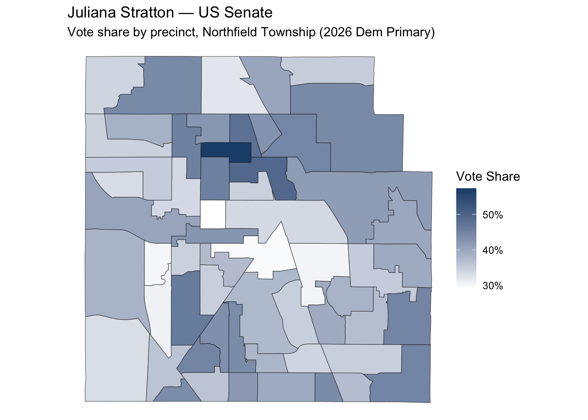
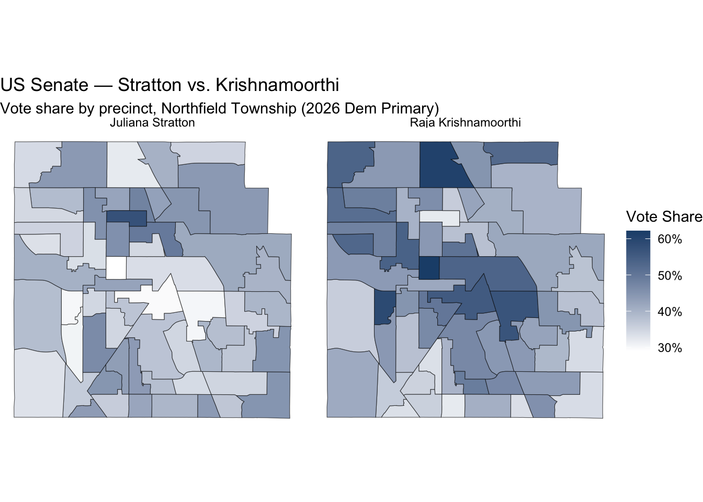
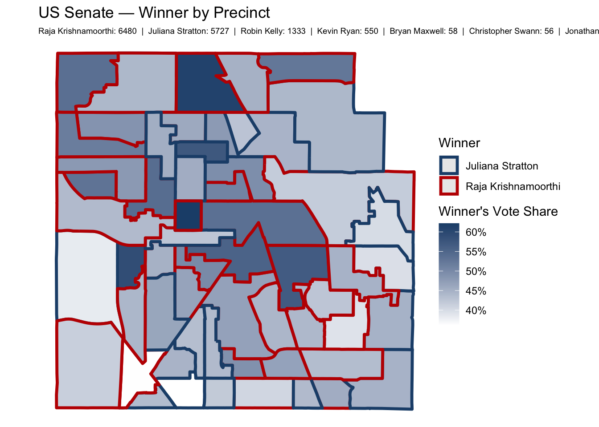
# A tibble: 2 × 2
candidate n
<chr> <int>
1 Raja Krishnamoorthi 36
2 Juliana Stratton 24[1] "Raja Krishnamoorthi: 53.1% | Juliana Stratton: 46.9%"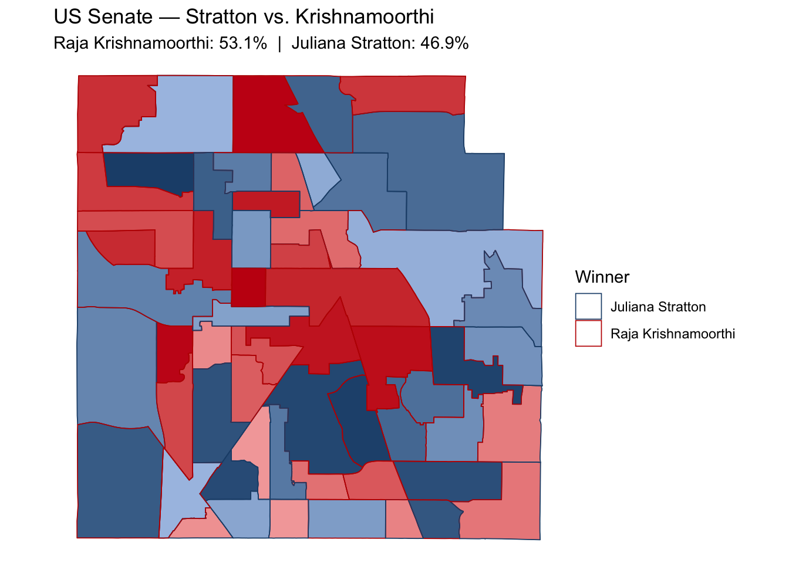
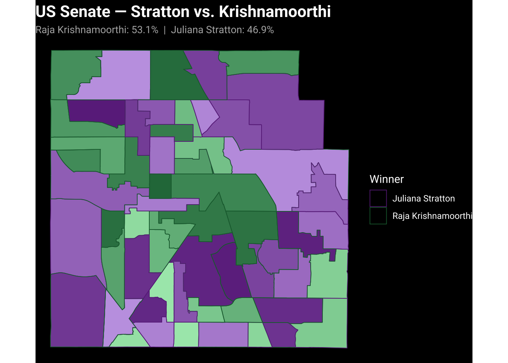
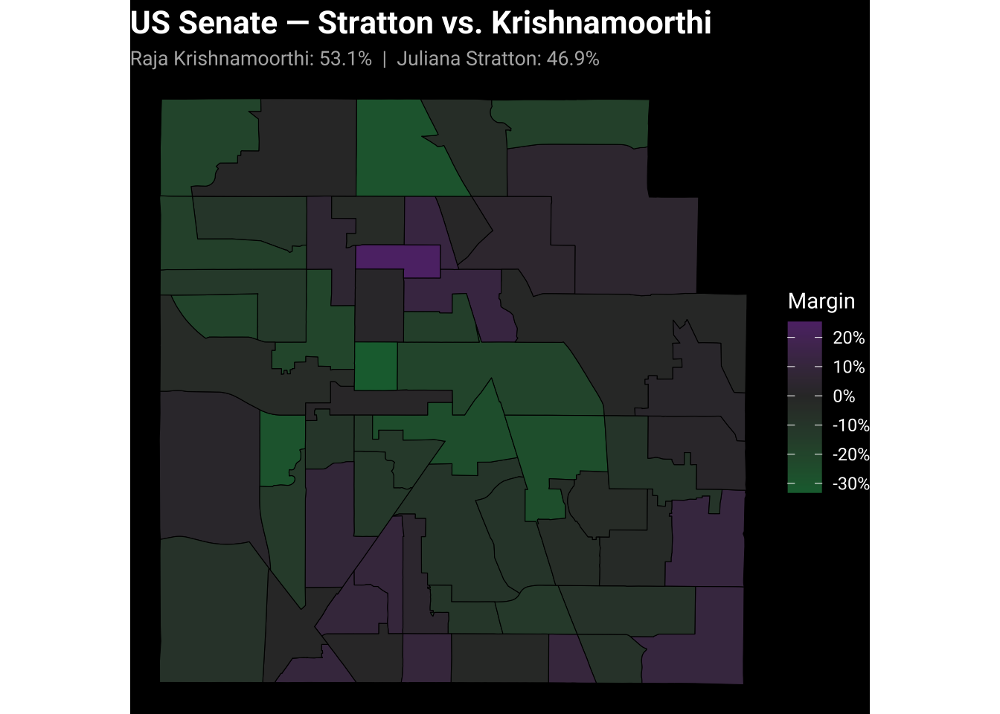
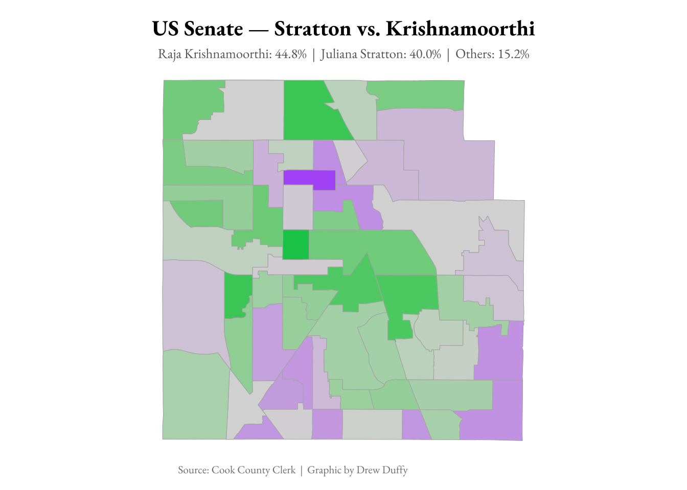
mapping: label = ~precinct_num
geom_text: parse = FALSE, check_overlap = FALSE, na.rm = FALSE
stat_sf_coordinates: na.rm = FALSE, fun.geometry = NULL
position_nudge 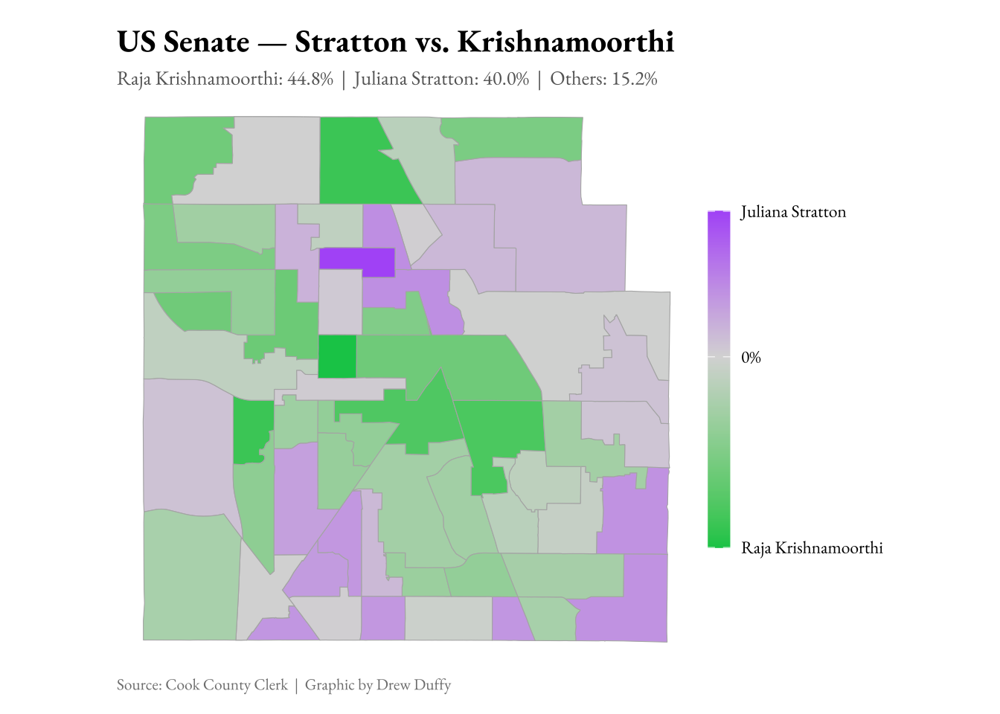
# A tibble: 0 × 2
# ℹ 2 variables: precinct <chr>, precinct_num <dbl># A tibble: 58 × 2
precinct precinct_num
<chr> <dbl>
1 Northfield 1 1
2 Northfield 2 2
3 Northfield 3 3
4 Northfield 4 4
5 Northfield 5 5
6 Northfield 6 6
7 Northfield 7 7
8 Northfield 8 8
9 Northfield 9 9
10 Northfield 10 10
11 Northfield 11 11
12 Northfield 12 12
13 Northfield 13 13
14 Northfield 14 14
15 Northfield 15 15
16 Northfield 16 16
17 Northfield 17 17
18 Northfield 18 18
19 Northfield 19 19
20 Northfield 20 20
21 Northfield 21 21
22 Northfield 22 22
23 Northfield 23 23
24 Northfield 24 24
25 Northfield 25 25
26 Northfield 26 26
27 Northfield 27 27
28 Northfield 28 28
29 Northfield 29 29
30 Northfield 30 30
31 Northfield 31 31
32 Northfield 32 32
33 Northfield 33 33
34 Northfield 34 34
35 Northfield 35 35
36 Northfield 36 36
37 Northfield 37 37
38 Northfield 38 38
39 Northfield 39 39
40 Northfield 40 40
41 Northfield 41 41
42 Northfield 42 42
43 Northfield 43 43
44 Northfield 44 44
45 Northfield 45 45
46 Northfield 46 46
47 Northfield 47 47
48 Northfield 48 48
49 Northfield 49 49
50 Northfield 50 50
51 Northfield 51 51
52 Northfield 52 52
53 Northfield 53 53
54 Northfield 54 54
55 Northfield 55 55
56 Northfield 56 56
57 Northfield 57 57
58 Northfield 58 58# A tibble: 2 × 2
candidate n
<chr> <int>
1 Raja Krishnamoorthi 34
2 Juliana Stratton 24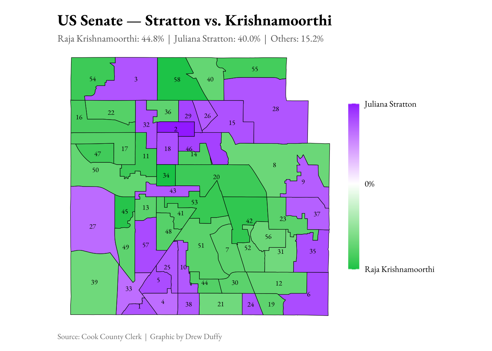
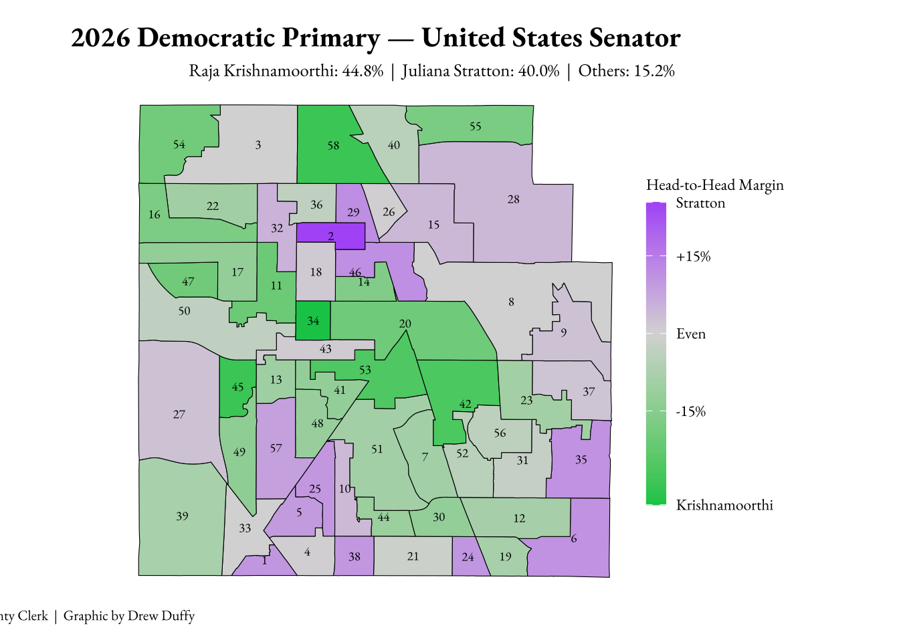
# A tibble: 4 × 2
candidate n
<chr> <int>
1 Laura Fine 29
2 Daniel Biss 4
3 Kat Abughazaleh 1
4 Phil Andrew 1# A tibble: 15 × 3
candidate total pct
<chr> <dbl> <chr>
1 Laura Fine 3664 42.8%
2 Daniel Biss 2289 26.7%
3 Kat Abughazaleh 998 11.7%
4 Phil Andrew 986 11.5%
5 Bushra Amiwala 244 2.9%
6 Hoan Huynh 77 0.9%
7 Mike Simmons 70 0.8%
8 Patricia A. Brown 57 0.7%
9 Jeff Cohen 48 0.6%
10 Sam Polan 35 0.4%
11 Justin Ford 25 0.3%
12 Bethany Johnson 21 0.2%
13 Nick Pyati 17 0.2%
14 Mark Arnold Fredrickson 15 0.2%
15 Howard Rosenblum 12 0.1% 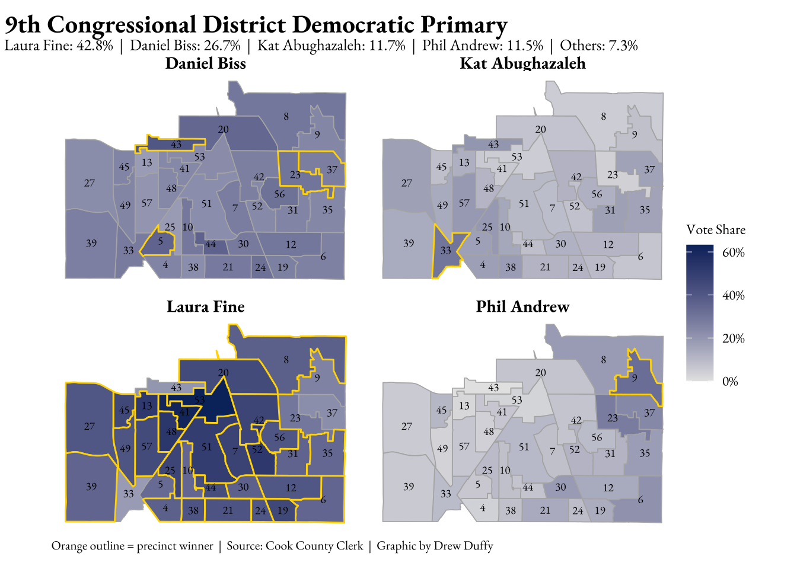
# A tibble: 2 × 3
candidate total pct
<chr> <dbl> <chr>
1 Fritz Kaegi 7718 56.0%
2 Pat Hynes 6074 44.0%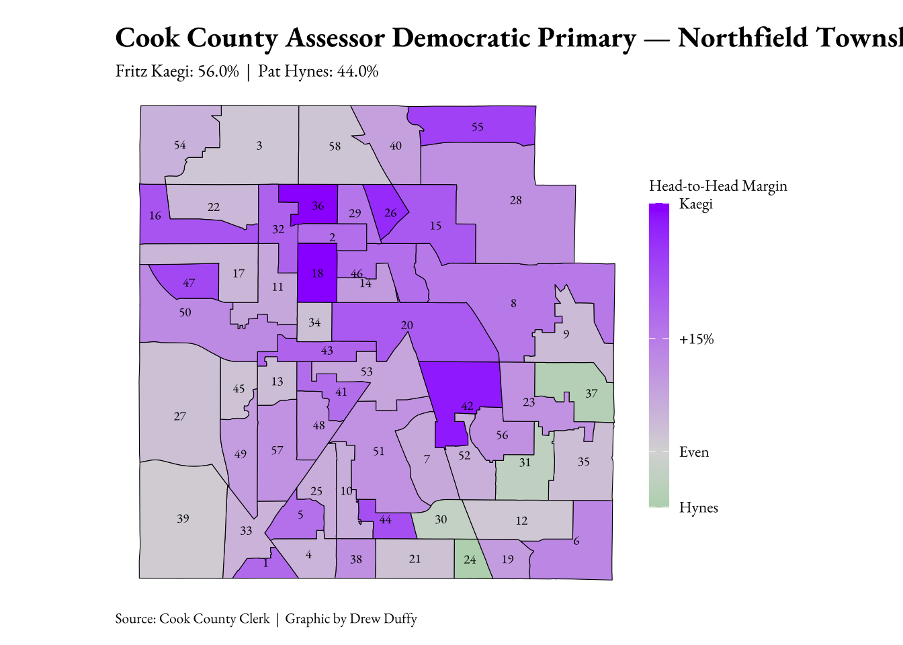
# A tibble: 2 × 3
candidate total pct
<chr> <dbl> <chr>
1 "Elizabeth \"Liz\" Nicholson" 6684 57.9%
2 "Samantha Steele" 4851 42.1%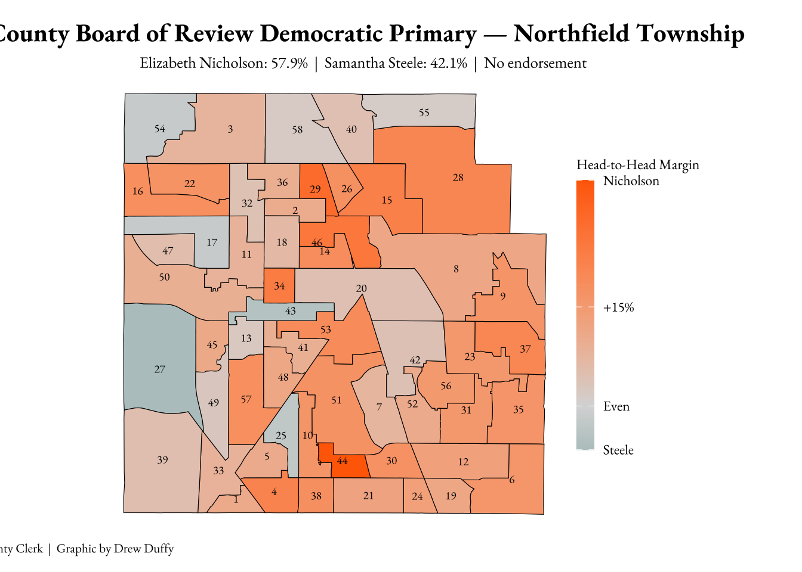
# A tibble: 2 × 3
candidate total pct
<chr> <dbl> <chr>
1 Patrick Hanley 3270 50.1%
2 Rachel Ruttenberg 3257 49.9%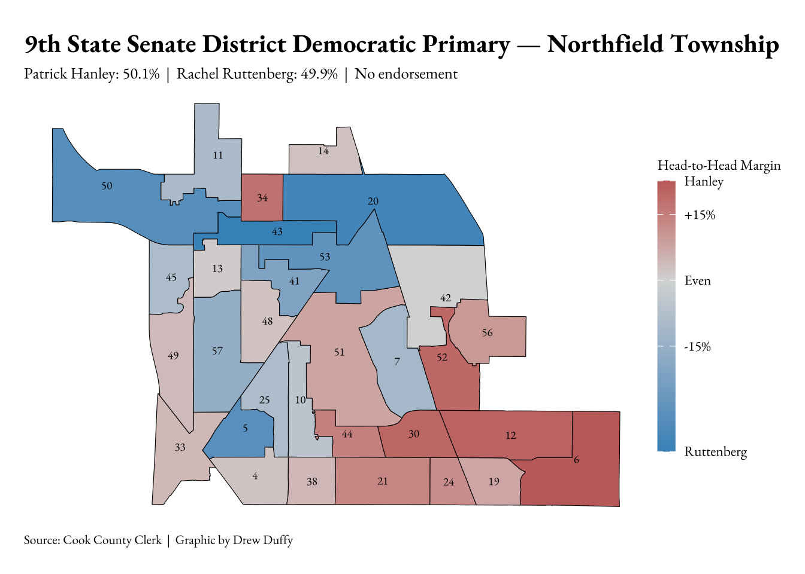
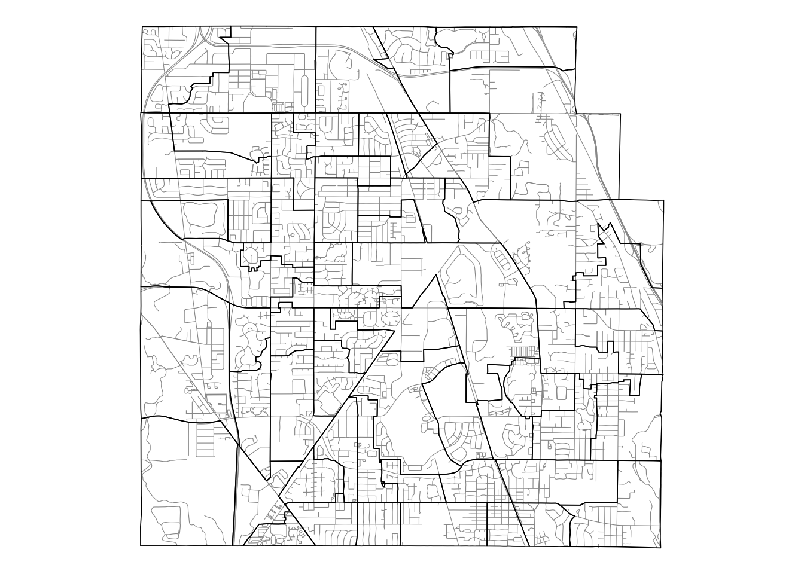
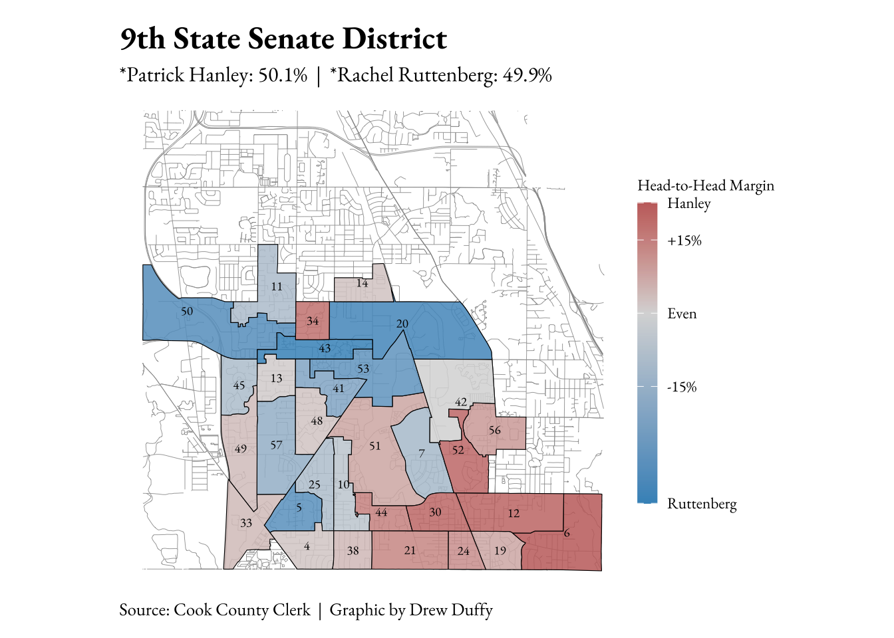
# A tibble: 4 × 3
candidate total pct
<chr> <dbl> <chr>
1 Margaret Croke 5316 40.3%
2 Holly Kim 5257 39.8%
3 Karina Villa 1986 15.0%
4 Stephanie A. Kifowit 646 4.9% 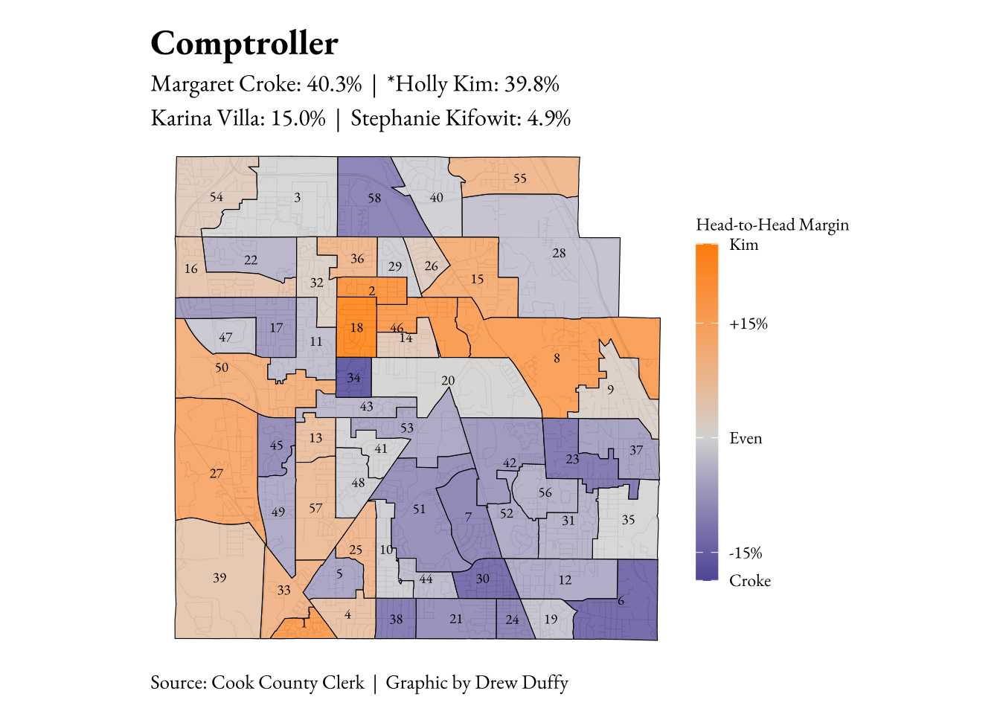
# A tibble: 2 × 2
candidate n
<chr> <int>
1 Margaret Croke 33
2 Holly Kim 25# A tibble: 6 × 3
candidate total pct
<chr> <dbl> <chr>
1 Laura Fine 5997 44.2%
2 Daniel Biss 4877 35.9%
3 Josina Morita 1241 9.1%
4 George D. Alpogianis 512 3.8%
5 Leni Manaa-Hoppenworth 497 3.7%
6 Eric Smith 458 3.4% # A tibble: 6 × 3
candidate total pct
<chr> <dbl> <chr>
1 Laura Fine 5997 44.2%
2 Daniel Biss 4877 35.9%
3 Josina Morita 1241 9.1%
4 George D. Alpogianis 512 3.8%
5 Leni Manaa-Hoppenworth 497 3.7%
6 Eric Smith 458 3.4% 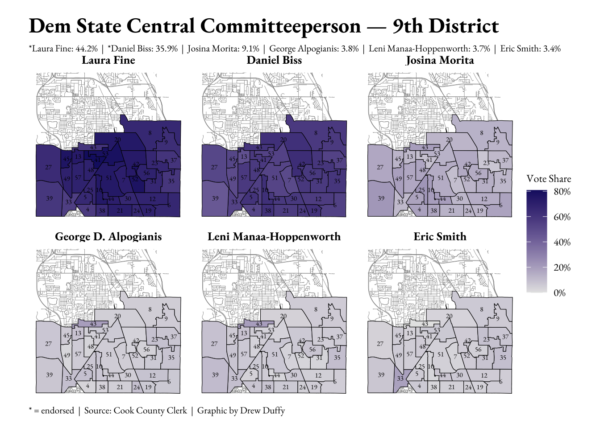
# A tibble: 4 × 3
candidate total pct
<chr> <dbl> <chr>
1 Tracy Katz Muhl 4225 45.3%
2 Thomas Maillard 2783 29.8%
3 Mary Edly-Allen 1201 12.9%
4 Jennifer Banek 1120 12.0%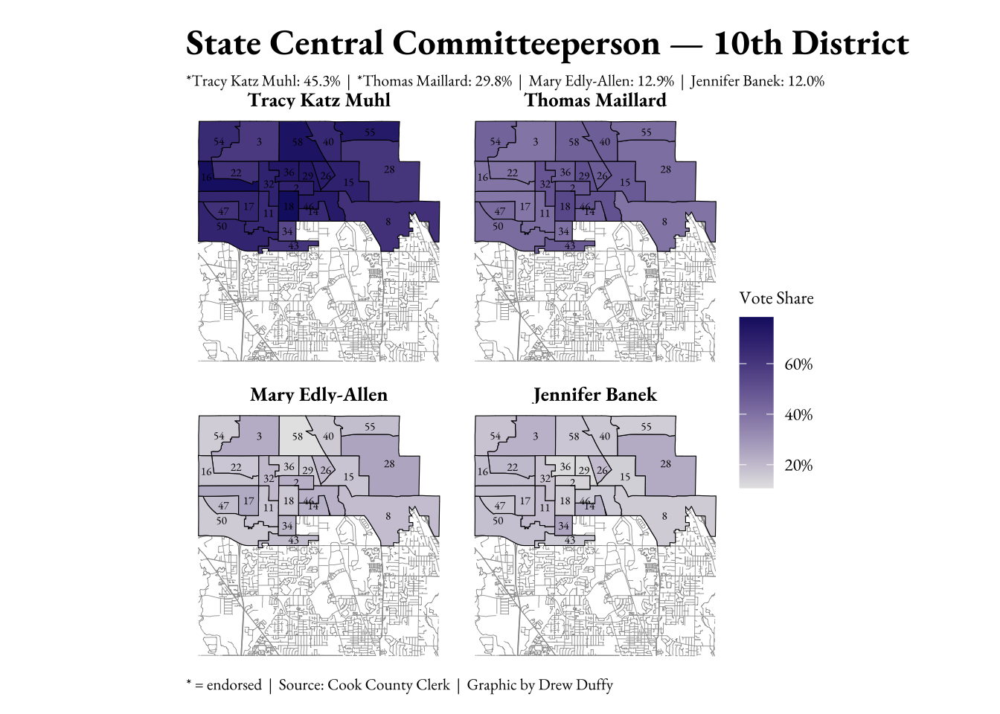
# A tibble: 24 × 1
precinct_num
<dbl>
1 2
2 3
3 8
4 11
5 14
6 15
7 16
8 17
9 18
10 22
# ℹ 14 more rows# A tibble: 2 × 3
candidate total pct
<chr> <dbl> <chr>
1 Toni Preckwinkle 8472 59.6%
2 Brendan Reilly 5753 40.4%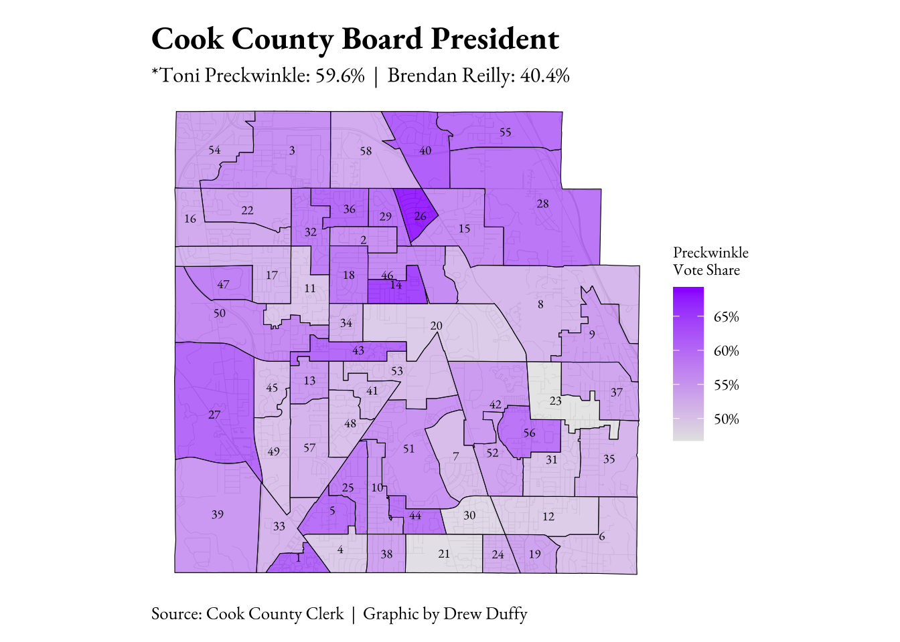
# A tibble: 1 × 2
candidate n
<chr> <int>
1 Toni Preckwinkle 58# A tibble: 4 × 3
candidate total pct
<chr> <dbl> <chr>
1 Beth McElroy Kirkwood 9970 29.9%
2 Eira Lizeth Corral Sepúlveda 9520 28.6%
3 Precious Brady-Davis 8889 26.7%
4 Sarah Bury 4915 14.8%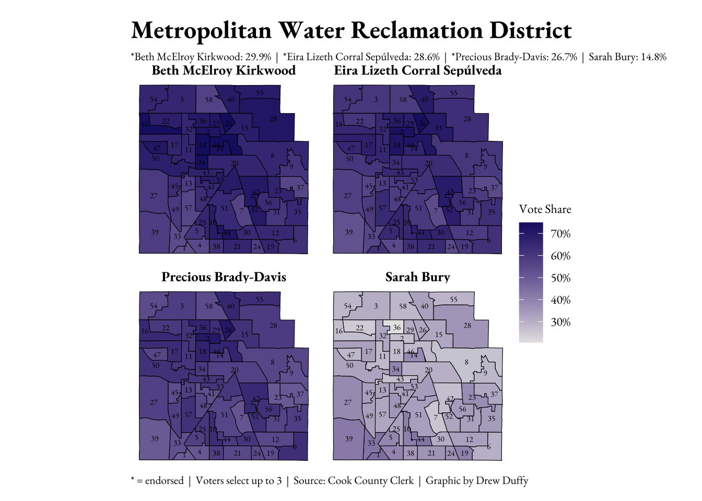
# A tibble: 4 × 4
# Groups: race [2]
race candidate total pct
<chr> <chr> <dbl> <chr>
1 Circuit Court Judge (Cobbs) Luz Maria Toledo 8070 65.5%
2 Circuit Court Judge (Cobbs) Linda Sackey 4260 34.5%
3 Circuit Court Judge (Coghlan) Michael Cabonargi 7826 63.7%
4 Circuit Court Judge (Coghlan) Ashonta C. Rice 4463 36.3%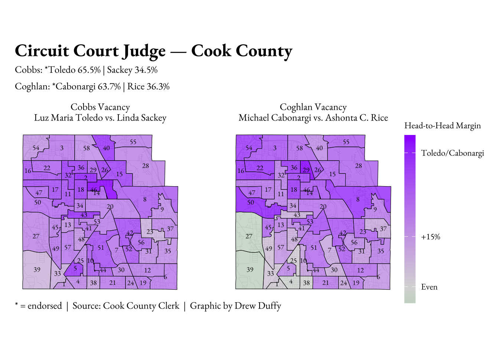
# A tibble: 3 × 3
race candidate n
<chr> <chr> <int>
1 Circuit Court Judge (Cobbs) Luz Maria Toledo 58
2 Circuit Court Judge (Coghlan) Michael Cabonargi 54
3 Circuit Court Judge (Coghlan) Ashonta C. Rice 4